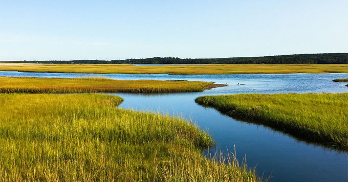
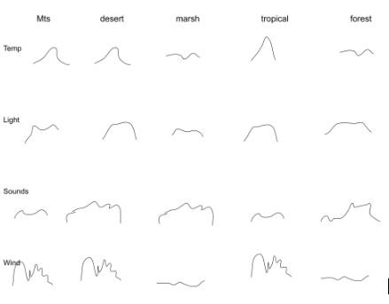
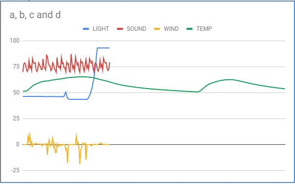
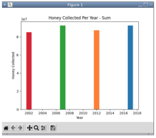
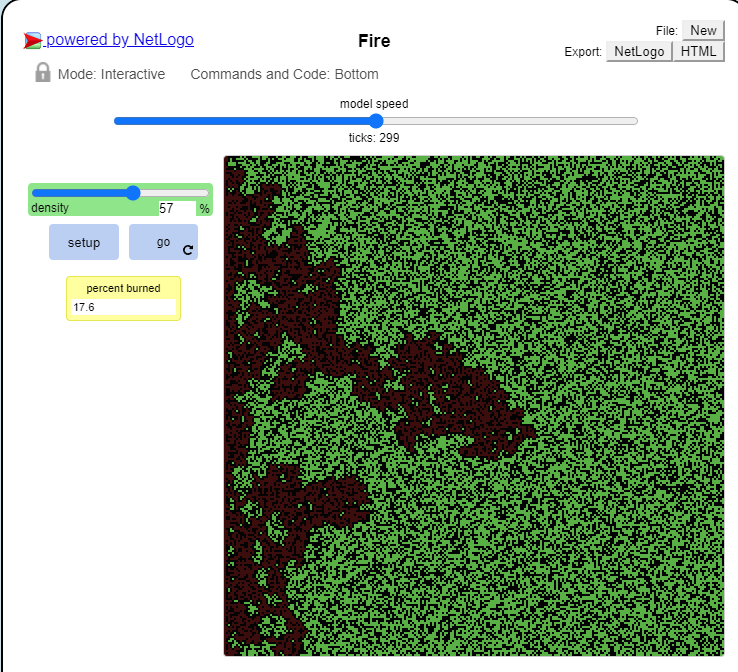
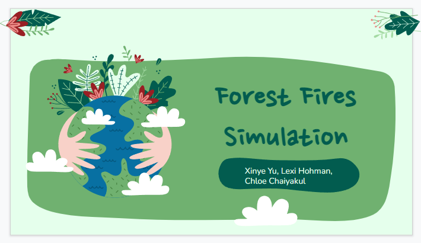

Home
Portfolio
About Me
This is my Portfolio Page!
1.1.9 Project- Flying Birds

This project is called Flying Birds. The code includes a sun, sky, clouds, trees, and birds that fly across the screen. A turtle also runs through the grass and off the screen. We used a variety of dfferent shapes and python turtle methods in order to create our project.
1.2.5 Project- Spongebob vs Patrick Fireball

This game is called Spongebob vs Patrick Fireball. Both characters have three lives and can shoot fireballs at one another. They can also move up and down with the up and down arrow keys and w and s keys. When either character is shot, they lose a life. Eventually, when all lives are gone, that player dies and the character who wins is presented on the screen.
Scratch Project- Starfish Pong
My team and I created this game called Starfish Pong using Scratch. It is similar to a regular pong game, however there is an underwater scene present and two starfish are used instead of one ball. Each time a starfish bounces off of the paddle, the starfish change colors and the player earns a point. When a starfish hits the red line at the bottom of the screen, the game ends.
3.1.6 Project- Rover Phone Home
  
Based on the data given and the graphs that my group drew, we concluded that the rover got lost in the marsh lands. The graphs show smooth constant temperatures that slightly vary as the day goes on, low ambient light during the daytime, constant critter chipping and buzzing, and little to no wind. The descriptions match with the original sketches of the different environmental regions.
3.2.4 Project- Making Meaning from Data

The "Making Meaning from Data" project was focused on extracting information from data using a program and gaining insight/knowledge from data using the same program. For this project, we took large amounts of information and put it into a computer spreadsheet so it could be properly analyzed. We added certain groupby methods, parameters, and other code to easily visualize what the data was representing. This graph shows the amount of honey collected from bees over the years.
4.1.4 Project- Understanding Complex Systems
 
Understanding Complex Systems allowed us to explore the use of simulations with real-world contexts, gaining certain insight into data. My group explored the simulation modeling forest fires. The turtles represent trees and change color when caught on fire. Learning how forest fires can spread within randomized forests that mimic the environment can help us gain more information on how to properly design fire control methods when relating the simulation to real-world issues.